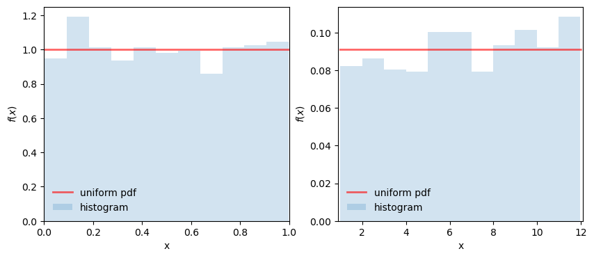
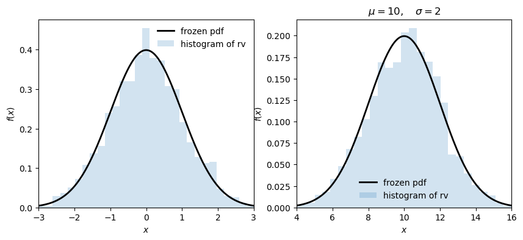

Algunos ejemplos de uso de las funciones y su visualización
Las líneas muestran la densidad/masa de probabilidad teórica, y los histogramas son calculados a partir de muestras aleatorias usando fn.rvs para las distintas funciones, con los parámetros definidos o, en caso de que no, los que vienen por defecto.
Uniforme
from scipy.stats import*import numpy as npimport matplotlib.pyplot as pltplt.rcParams['figure.figsize'] = [10, 4]fig, ax = plt.subplots(1, 2)plt.figure(figsize=(5, 50), dpi=200)x = np.linspace(0, 1, 200)ax[0].plot(x, uniform.pdf(x),'r-', lw=2, alpha=0.6, label='uniform pdf')r = uniform.rvs(size=1000)ax[0].hist(r, density=True, bins='auto', histtype='stepfilled', alpha=0.2, label='histogram')ax[0].set_xlim([x[0], x[-1]])ax[0].set_xlabel('x')ax[0].set_ylabel('$f(x)$')ax[0].legend(loc='best', frameon=False)# con loc y scaleloc =1scale =11x = np.linspace(loc, loc + scale, 2000)ax[1].plot(x, uniform.pdf(x, loc, scale),'r-', lw=2, alpha=0.6, label='uniform pdf')r = uniform.rvs(size=1000, loc=loc, scale=scale)ax[1].hist(r, density=True, bins='auto', histtype='stepfilled', alpha=0.2, label='histogram')ax[1].set_xlim([x[0] -0.1, x[-1] +0.1])ax[1].set_xlabel('x')ax[1].set_ylabel('$f(x)$')ax[1].legend(loc='best', frameon=False)plt.show()

<Figure size 1000x10000 with 0 Axes>
Exponencial
fig, ax = plt.subplots(1, 1)λ =1/60x = np.linspace(0, 600, 200)# variable aleatoria (random variate/variable, rv)rv = expon(loc=0, scale=1/ λ)# pdf a partir de la rvax.plot(x, rv.pdf(x), 'k-', lw=2, label='frozen pdf')r = rv.rvs(size=1000)ax.hist(r, density=True, bins='auto', histtype='stepfilled', alpha=0.2, label='histogram of rv')ax.legend(loc='best', frameon=False)ax.set_title("$\\lambda\\exp(-\\lambda x)$")ax.set_xlabel("$x$")ax.set_ylabel("$f(x)$")plt.show()print(f'desviación estándar: {np.std(rv.rvs(1000)).round(2)};\nmedia: {np.mean(rv.rvs(1000)).round(2)}')
desviación estándar: 63.55;
media: 60.27
Normal
fig, ax = plt.subplots(1, 2)x = np.linspace(-3, 3, 200)rv = norm()ax[0].plot(x, rv.pdf(x), 'k-', lw=2, label='frozen pdf')ax[0].hist(rv.rvs(size=2000), density=True, bins='auto', histtype='stepfilled', alpha=0.2, label="histogram of rv")ax[0].set_xlim([x[0], x[-1]])ax[0].set_xlabel("$x$")ax[0].set_ylabel("$f(x)$")ax[0].legend(loc='best', frameon=False)# con loc y scale diferentesloc=10scale=2x = np.linspace(loc-3*scale, loc+3*scale, 200)rv = norm(loc, scale)ax[1].plot(x, rv.pdf(x), 'k-', lw=2, label='frozen pdf')ax[1].hist(rv.rvs(size=2000), density=True, bins='auto', histtype='stepfilled', alpha=0.2, label="histogram of rv")ax[1].set_xlim([x[0], x[-1]])ax[1].set_title(f'$\\mu={{{loc}}},\\quad \\sigma={{{scale}}}$')ax[1].set_xlabel("$x$")ax[1].set_ylabel("$f(x)$")ax[1].legend(loc='best', frameon=False)plt.show()# desviación estándar de n=1000print(f'desviación estándar: {np.std(rv.rvs(1000)).round(2)}')

desviación estándar: 1.96
¿Por qué?
Modelos de probabilidad ¿Cuál es la probabilidad de observar los datos dado los parámetros que conocemos?
Modelos estadísticos: ¿Cuáles son los valores más plausibles de los parámetros dado los datos que observamos? (Notar que no dice “más probables”).
Probabildad vs estadística
Ejemplo: ¿Cuán probable es que obtengamos 9 “Caras” (1) si lanzamos una moneda “justa” ( \(p=0.5\) ) 10 veces?
La pregunta es sobre 10 lanzamientos, y cada uno de ellos es un experimento aleatorio, que da lugar a una VA discreta cuyos valores solo pueden ser dos, \(\{0,1\}\) (por ejemplo). A cada uno de estos lanzamientos le llamamos ensayo de Bernoulli (un ensayo con resultados de tipo éxito/fracaso).
La VA discreta que resulta de los 10 lanzamientos tiene distribución binomial, que se usa para modelar el número de éxitos (e.g., valores en los que \(X=1\)) en una muestra aleatoria con reemplazo de tamaño \(n\).
En donde \(\binom{n}{k}\) es el coeficiente binomial
\[
\binom{n}{k} = \frac{n!}{k!(n-k)!}
\]
\(n\) es el tamaño de la muestra (el total de ensayos), \(k\) el número de éxitos, y \(\theta\) un parámetro de la distribución que define la probabilidad de éxito (y por lo tanto, define la forma de la distribución y el valor más probable). Por ejemplo, si nuestra moneda es justa, tendrá una \(\theta=0.5\).
La media de una distribución binomial es \(n\times \theta\), esto significa que si lanzamos 10 veces una moneda con \(\theta=0.5\), el valor más probable de éxitos será \(0.5\times 10 = 5\).
En python podríamos obtener la probabilidad que buscamos de la siguiente manera:
k=9n=10p=0.5binom.pmf(k, n, p).round(3)
0.01
Es decir, la probabilidad de tener 9 éxitos, dado que \(\theta=0.5, n=10\), es de apenas ~0.01, una probabilidad muy baja.
¿Cuál sería la probabilidad de conseguir 6 éxitos bajo las mismas asunciones?
k=6n=10p=0.5binom.pmf(k, n, p).round(3)
0.205
¿Y dos éxitos?
binom.pmf(2, n, p).round(3)
0.044
La distribución de la binomial con estos parámetros tiene la siguiente forma
Abreviaremos \(L(\theta)\) simplemente como \(L(\theta)\)
Nota: parece que estamos definiendo la función de verosimilitud como la función de densidad conjunta, pero hay una diferencia importante. La función de densidad conjunta toma como fijo \(\theta\), y lo que varía es \(\mathbf{x}\), pero en la función de verosimilitud \(\mathbf{x}\) ya fue observado, por lo que es fijo, y consideramos que \(\theta\) varía sobre todos los posibles valores.
Si \(X_1, X_2, \dots, X_n\) son muestras independientes e idénticamente distribuidas (i.i.d), la función de densidad conjunta es
Notar que la función de densidad conjunta es equivalente al producto de la función de densidad de cada variable. Esto proviene de la definición de independencia: \(A\) y \(B\) son independientes sii\(P(A, B)=P(A)P(B)\).
Para algunos problemas, la función de log-verosimilitud, \(\mathcal{l}(\theta)\) es más conveniente, dado que es más sencillo de trabajar con sumas que con productos y, además, la transformación logarítmica es monotónica.
La función de verosimilitud puede ser usada para cuantificar la evidencia que tenemos en favor de una hipótesis. Retomando el ejemplo de lanzamientos de monedas, ¿qué tan creíble o verosímil es que 9 de 10 lanzamientos hayan sido caras (éxitos) dado que\(\theta=0.5\)? ¿Es menos, o más creíble, haber obtenido 9/10 con un \(\theta=0.5\)?
Obtendremos primero la verosimilitud \(L(\theta=0.5)\) para esta distribución.
Considera una muestra aleatoria de \(n=10\) ensayos de Bernoulli \(x_1,\dots, n_{10}\), cada uno con distribución
\[
f(x) = \theta^x(1-\theta)^{1-x}\quad \text{ con } x = 0,1
\]
Dado que \(\sum_{i=1}^{10} x_i = 9\), y \(n=10\), \(L(\theta)=\theta^9(1-\theta)^{10-9}\)
Para \(\theta=0.5\), \(L(\theta=0.5)=0.5^9(1-0.5)=0.00097\).
Para \(\theta=0.9\),\(L(\theta=0.9)=0.9^9(1-0.9)=0.038\).
Si obtenemos la razón de ambas, \(L(\theta_2)/L(\theta_1)\) obtenemos un valor que nos dice cuántas veces más verosímil es \(\theta_2\) vs \(\theta_1\).
Gráficamente se vería así
# éxitos obtenidosk=9# cantidad de ensayosn=10# hipótesis 1p1=0.5# hipótesis dosp2=0.9p_vec = np.linspace(0, 1, 200)bin_like=binom.pmf(k, n, p_vec)fig, ax = plt.subplots(1, 1)ax.plot(p_vec, bin_like)ax.scatter(p1, binom.pmf(k, n, p1), c='red')ax.scatter(p2, binom.pmf(k, n, p2), c='black')ax.set_xlabel('$\\theta$')ax.set_ylabel('$L(\\theta)$')plt.show()
3.2 Máxima verosimilitud
Hasta aquí la motivación del uso de las funciones de verosimilitud. Ahora veamos más formalmente la técnica para estimar parámetros, la estimación por máxima verosimilitud (EMV, y en inglés MLE).
El problema de la MLE consiste en lo siguiente. Sea \(X_1, X_2, \dots, X_n\) una muestra aleatoria de variables i.i.d. con distribución conjunta \(L(\theta\mid X_1,\dots,X_n)\). El estimador de máxima verosimilitud de \(\theta\) es la solución al problema de optimización
En donde \(\theta^*\) constituye el valor del argumento \(\theta\) que maximiza \(L\), es decir, el valor que maximiza la verosimilitud.
Caveat: este método impone una restricción fuerte, que es asumir que los datos siguen una distribución específica.
3.2.1 MLE para binomial; obteniendo \(\theta\)
Como vimos gráficamente, \(L\) para una binomial es cóncava. Podemos usar herramientas de cálculo para obtener \(\theta^*\). Volvamos al ejemplo inicial, en donde usamos 10 lanzamientos y obtuvimos 9 éxitos. Vimos que podemos modelar este problema como 10 ensayos de Bernoulli independientes, que es lo mismo que una función de distribución Binomial.
Si \(L(\theta \mid X_1,...,X_n)\) es cóncava, el criterio de la primera derivada nos bastaría para encontrar \(\theta^*\). Recordando la definición geométrica de la primera derivada, sabemos que encontramos un máximo o mínimo en donde la pendiente de una función es 0. Por lo tanto, queremos encontrar en dónde
Antes de proseguir, podemos ver que en este caso transformar a \(\log\)\(L(\theta)\) podría simplificar las derivaciones. Dado que la transformación logarítmica es estrictamente creciente (monotónica), encontrar un máximo en \(L\) es lo mismo que encontrarlo en \(\log(L)\)
En donde \(\hat \theta\) es nuestro sample proportion, proporción muestral (por eso lleva el gorrito).
Para nuestor ejemplo,
\[
\hat\theta=\frac{9}{10}=0.9
\]
NOTA: El criterio de la primera derivada solo es una condición necesaria, no suficiente, para encontrar un máximo. Este método nos revela candidatos posibles a MLE.
3.2.2 Encontrando el MLE en R para una binomial
Vamos a hacer una primera aproximación numérica usando grid-search
En la práctica, este método puede ser muy costoso. Imaginar, por ejemplo, que se tiene que hacer una búsqueda para estimar 2 parámetros. Tendríamos que hacer combinaciones del grid de ambos parámetros. Este suele ser el método de fuerza bruta que se usa, en ocasiones, como primera aproximación o cuando no nos funciona ninguna otra cosa.
Es más eficiente usar un algoritmo de optimización, como minimize de scipy.optimize. En vez de maximizar, minimizaremos, por lo que la función cóncava la convertiremos en convexa multiplicando por -1.
# multiplicar por menos 1 la función de log-verosimilituddef binom_pmf2(p, n, k): ll = k * np.log(p) + (n - k) * np.log(1- p) + np.log(m.comb(n, k))return-lln =10k =9# valor inicialtheta =0.2# minimizar la función de log-verosimilitud negativa# deben declararse los argumentos faltantes con args# los argumentos son tomados en orden; theta es el p inicialres = minimize(binom_pmf2, theta, args=(n, k), method='Nelder-Mead', bounds=[(0, 1)])grid_vals = np.linspace(0, 1, 1000)fig, ax = plt.subplots(1, 1)ax.plot(grid_vals, binom_pmf2(grid_vals, n, k))ax.scatter(res.x, res.fun, c='red')ax.text(res.x *0.8, res.fun *2.8, s=f'$\\argmax\ l(\\theta)={{{round(res.x[0], 3)}}}$')ax.set_xlabel('$\\theta$')ax.set_ylabel('$l(\\theta)$')plt.show()print(f'argmax = {res.x.round(3)[0]}')
argmax = 0.9
3.2 MLE para normal; obteniendo \(\mu\) con \(\sigma\) conocida
Si \(L\) es diferenciable en \(\theta_i\), candidatos posibles para MLE son los valores \((\theta_1^*, \theta_2^*, \dots, \theta_k^*)\) que son la solución a
\[
\frac{\partial L(\theta)}{\partial\theta}=0
\]
De nuevo, esto solo es una condición necesaria, no suficiente, para encontrar MLEs. Por ello menciono “candidatos posibles”.
Sea \(X_1, \dots, X_n\) una i.i.d. normalmente distribuida con media \(\theta\) y varianza de 1, es decir \(X_i \sim \mathcal{N}(\theta, 1)\), y sea \(L(\theta)\) la función de verosimilitud
Dado que el primer término no depende de \(\theta\), se elimina. Para el segundo término, notando que una derivada de una sumatoria es la suma de sus derivadas, y usando la regla \(du^n/du=ndu\) nos queda
Nota: la distribución normal a veces es parametrizada con la desviación estándar, \(\sigma\), y a veces con la varianza, \(\sigma^2\). Esto se puede notar en los denominadores de ambos términos de la función que acabo de colocar.
Footnotes
La función densidad uniforme por defecto tiene un rango entre [0, 1], pero con los argumentos loc y scale se pueden crear rangos [a, b].↩︎
La normal por defecto tiene media, o \(\mu\), de 0; y desviación estándar, \(\sigma\), de 1, por lo que la función de densidad sería. \[
p(x)=\frac{1}{\sqrt{2\pi}}\exp\left\{-\frac{x^2}{2}\right\}
\]↩︎
La función de densidad exponencial tiene varias parametrizaciones. En scipy.stats la común es usando el parámetro scale, que es básicamente la desviación estándar (y, en la exponencial y en poisson, también la media). Esta parametrización por defecto corresponde a \(p(x)=\frac{1}{\lambda}e^{-x/\lambda}\). El argumento loc no corresponde a un parámetro en particular de la exponencial, es simplemente una translación de la distribución. Por defecto es 0.↩︎